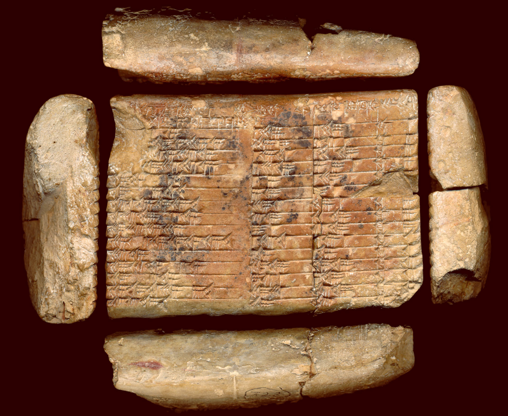
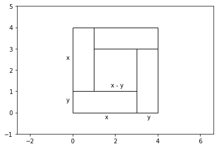

Plimton 322 の解読 (1)#
粘土板に楔形文字を書く#
Plimpton 322 の外観#


Plimpton 322 の数表を読み込む#
-
数表-1: 60進法
異なる推定値を括弧で示し、1番目と4番目のコラムのうち内容が推定される破損部分を斜体で示し、6つの推定誤りを太字で示し、その下の角括弧に一般に提案されている訂正を示す
3列目の53を2倍の値である1 46に置き換えるか、2列目の56を半分の値である28に置き換えるか
数表-2: 10進法
11行目の2列目と3列目には、15行目を除く他の行とは異なり、共通因子が含まれている。\(45\) と\(1 15\)はバビロニア数学では\(3/4\)と\(5/4\)と解釈される可能性があり、これはおなじみの標準的な直角三角形 \((3,4,5)\) を縮小した\((0.75, 1, 1.25)\) と一致するものです
15行目も2列目が28、3列目が53と修正される可能性がある
import pandas as pd
dfs=pd.read_html('https://en.wikipedia.org/wiki/Plimpton_322')
dfs[0]
| takiltum of the diagonal from which 1 is torn out so that the width comes up | ÍB.SI8 of the width | ÍB.SI8 of the diagonal | its line | |
|---|---|---|---|---|
| 0 | (1) 59 00 15 | 1 59 | 2 49 | 1st |
| 1 | (1) 56 56 58 14 56 15 (1) 56 56 58 14 [50 06] 15 | 56 07 | 3 12 01 [1 20 25] | 2nd |
| 2 | (1) 55 07 41 15 33 45 | 1 16 41 | 1 50 49 | 3rd |
| 3 | (1) 53 10 29 32 52 16 | 3 31 49 | 5 09 01 | 4th |
| 4 | (1) 48 54 01 40 | 1 05 | 1 37 | 5th |
| 5 | (1) 47 06 41 40 | 5 19 | 8 01 | 6th |
| 6 | (1) 43 11 56 28 26 40 | 38 11 | 59 01 | 7th |
| 7 | (1) 41 33 59 03 45 (1) 41 33 [45 14] 03 45 | 13 19 | 20 49 | 8th |
| 8 | (1) 38 33 36 36 | 9 01 [8] 01 | 12 49 | 9th |
| 9 | (1) 35 10 02 28 27 24 26 40 | 1 22 41 | 2 16 01 | 10th |
| 10 | (1) 33 45 | 45 | 1 15 | 11th |
| 11 | (1) 29 21 54 02 15 | 27 59 | 48 49 | 12th |
| 12 | (1) 27 00 03 45 | 7 12 01 [2 41] | 4 49 | 13th |
| 13 | (1) 25 48 51 35 06 40 | 29 31 | 53 49 | 14th |
| 14 | (1) 23 13 46 40 | 56 56 [28] (alt.) | 53 [1 46] 53 (alt.) | 15th |
dfs[1]
| or | Short Side | Diagonal | Row # | |
|---|---|---|---|---|
| 0 | (1).9834028 | 119 | 169 | 1 |
| 1 | (1).9491586 | 3367 | 4825 | 2 |
| 2 | (1).9188021 | 4601 | 6649 | 3 |
| 3 | (1).8862479 | 12709 | 18541 | 4 |
| 4 | (1).8150077 | 65 | 97 | 5 |
| 5 | (1).7851929 | 319 | 481 | 6 |
| 6 | (1).7199837 | 2291 | 3541 | 7 |
| 7 | (1).6927094 | 799 | 1249 | 8 |
| 8 | (1).6426694 | 481 | 769 | 9 |
| 9 | (1).5861226 | 4961 | 8161 | 10 |
| 10 | (1).5625 | 45* | 75* | 11 |
| 11 | (1).4894168 | 1679 | 2929 | 12 |
| 12 | (1).4500174 | 161 | 289 | 13 |
| 13 | (1).4302388 | 1771 | 3229 | 14 |
| 14 | (1).3871605 | 56* | 106* | 15 |
11行目に着目する#
dfs[0].take([10])
| takiltum of the diagonal from which 1 is torn out so that the width comes up | ÍB.SI8 of the width | ÍB.SI8 of the diagonal | its line | |
|---|---|---|---|---|
| 10 | (1) 33 45 | 45 | 1 15 | 11th |
dfs[1].take([10])
| or | Short Side | Diagonal | Row # | |
|---|---|---|---|---|
| 10 | (1).5625 | 45* | 75* | 11 |
import math
math.sqrt(75**2 - 45**2)
60.0
数表の公式#
正の整数 \(p\), \(q\) \((p>q)\) に対して、
\[\begin{split}
\begin{align}
a & = 2 p q \\
b & = p^2 - q^2\\
d & = p^2 + q^2\\
\end{align}
\end{split}\]
とおくと、\(a\), \(b\), \(d\) はピタゴラスの三数となり、\(a^2+b^2 = d^2\) を満たす。
解) 恒等式
\[
(x-y)^2 = (x+y)^2 - 4xy
\]
に対して \(x=p^2\), \(y=q^2\) とおいて \(p\), \(q\) を消去する。
\[\begin{split}
\begin{align}
(p^2-q^2)^2 &= (p^2+q^2)^2 - 4p^2q^2 \\
b^2 &= d^2 - a^2
\end{align}
\end{split}\]
from matplotlib.patches import Polygon
import matplotlib.pyplot as plt
p0 = Polygon([(0,0), (3,0), (3,1), (0,1), ], fill=False)
p1 = Polygon([(3,0), (4,0), (4,3), (3,3), ], fill=False)
p2 = Polygon([(4,3), (4,4), (1,4), (1,3), ], fill=False)
p3 = Polygon([(1,1), (1,4), (0,4), (0,1), ], fill=False)
fig, ax = plt.subplots(1,1)
ax.add_patch(p0)
ax.add_patch(p1)
ax.add_patch(p2)
ax.add_patch(p3)
ax.axis('equal')
ax.set(xlim=(0,4),ylim=(-1,5))
plt.text(1.5,-0.3,'x')
plt.text(3.5,-0.3,'y')
plt.text(-0.3,2.5,'x')
plt.text(-0.3,0.5,'y')
plt.text(1.8,1.2, 'x - y')
plt.show()

Plimpton 322との対応は次の表の通りである:
#1 |
#2 |
#3 |
|---|---|---|
$\(\left(\frac{d}{a}\right)^2\)$ |
$\(b\)$ |
$\(d\)$ |
$\(\frac{1}{4}\left(\frac{p}{q}+\frac{q}{p}\right)^2\)$ |
$\(p^2-q^2\)$ |
$\(p^2+q^2\)$ |
命題) Plimpton 322は、互いに素な正の整数 \(p\), \(q\) のうち、
\[
\frac{9}{5} \leq \frac{p}{q} \leq \frac{12}{5}
\]
を満たす組み合わせについて、
\[
\frac{d}{a} = \frac{1}{2}\left(\frac{p}{q}+\frac{q}{p}\right)
\]
をキーとして降順に並べたものである。